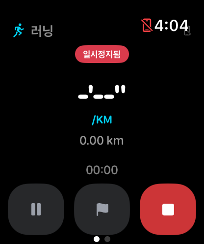

How Echo works
실제 화면으로 보는
Echo 사용법
기능 이름만 나열하지 않습니다. 앱 안의 실제 화면을 그대로 보여드리며, 어떻게 시작하고 어떻게 쓰는지 순서대로 안내합니다.

Getting started
운동을 시작하는 방법
종목을 고르고 버튼 하나만 누르면 바로 기록이 시작됩니다.
- 종목을 선택하세요러닝·라이딩·걷기·등산·트레일 러닝 중 오늘 할 운동을 고릅니다.
- 연결 상태를 확인하세요오른쪽 위에서 Apple Watch 연결 여부를 바로 확인할 수 있습니다.
- 운동 시작을 누르세요페이스, 심박, 경로 기록이 즉시 시작됩니다.
Live tracking
운동 중에는 이렇게 보입니다
지도와 핵심 수치만 남기고, 나머지는 화면 아래로 정리했습니다.
- 경로가 실시간으로 그려집니다3D 지도 위에 지금까지 이동한 경로가 표시됩니다.
- 현재 페이스를 확인하세요화면 아래에서 현재 페이스와 Apple Watch 심박을 함께 봅니다.
- 일시정지 또는 종료잠깐 멈추거나, 운동을 마치면 바로 기록으로 저장됩니다.

Today, at a glance
홈에서 오늘 하루를 확인하세요
운동을 시작하지 않아도, 홈 화면 하나로 오늘의 상태를 알 수 있습니다.
- 날씨를 먼저 보세요현재 위치의 기상청 예보와 운동 강도 안내를 확인합니다.
- 활동 링으로 오늘을 확인하세요걸음 수, 활동 에너지, 운동 횟수를 한 번에 봅니다.
- 이번 주 요약을 확인하세요거리·횟수·시간과 Echo 인사이트로 하루를 마무리합니다.

History and insight
쌓인 기록에서 변화를 발견하세요
요약, 통계, 리포트 세 가지 방식으로 같은 기록을 다르게 볼 수 있습니다.
- 탭을 전환해보세요요약은 한눈에, 통계는 추이로, 리포트는 월간 단위로 보여줍니다.
- 종목별로 필터링하세요전체 또는 러닝·라이딩·걷기 등 종목 하나만 골라 볼 수 있습니다.
- 운동을 눌러 자세히 보세요경로, 스플릿, 고도, 개인 기록 배지까지 확인합니다.

Goals and challenges
목표는 내가 직접 정합니다
타인과의 순위 대신, 나의 지난 기록을 기준으로 도전을 제안합니다.
- 이번 주 목표를 설정하세요운동 횟수, 시간, 거리, 걸음 수 중 원하는 목표를 고르고 값을 정합니다.
- 나를 위한 도전을 확인하세요“지난 나 넘기”처럼 직전 기록을 기준으로 한 도전이 자동으로 제안됩니다.
- 진행 막대로 확인하세요각 카드의 진행률이 실시간으로 채워집니다.

Apple Watch
워치만 차고 나가도 됩니다
iPhone 없이 Apple Watch만으로 운동을 시작하고 기록할 수 있습니다.
- 워치에서 바로 시작하세요종목을 고르면 워치 단독으로 GPS 기록이 시작됩니다.
- 손목에서 확인하세요페이스, 거리, 경과 시간을 워치 화면에서 바로 봅니다.
- iPhone과 자동으로 동기화됩니다운동을 마치면 iPhone의 기록에 자동으로 반영됩니다.
Get Echo
지금 시작하세요
iPhone과 Apple Watch에서 바로 받을 수 있습니다. Android 버전은 준비 중입니다.
다운로드App Store준비 중Google Play